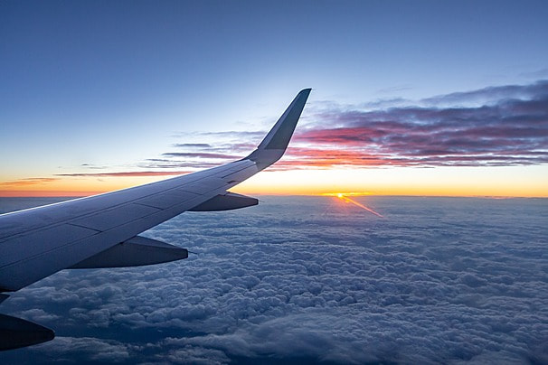
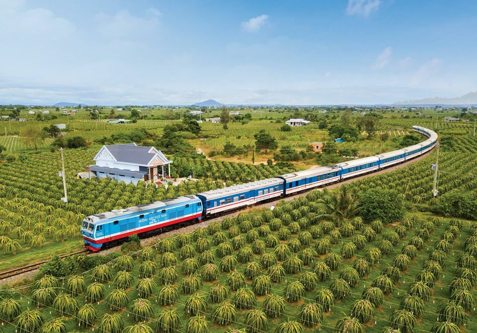
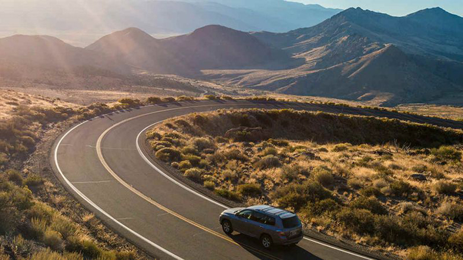

Cảnh đẹp
Mũi Nghinh phong

Không chỉ sở hữu tầm nhìn trực diện biển lý tưởng mà mũi Nghinh Phong còn có “background” chụp hình lý tưởng, trong đó phải kể đến: cổng thiên đường, căn nhà hoang, bậc thang xuống biển... Dù ở bất cứ góc nhìn nào du khách cũng có thể dễ dàng săn được bức ảnh như ý. Đặc biệt, mũi Nghinh Phong là nơi ngắm cảnh đẹp ở Vũng Tàu duy nhất sở hữu cổng thiên đường mang lại cảm giác tựa chốn bồng lai tiên cảnh, khiến du khách đến một lần là nhớ mãi.
Biển Vọng Nguyệt

Biển Mỹ Khê từng được tạp chí Forbes bình chọn là một trong 6 bãi biển quyến rũ nhất hành tinh. Bãi biển sở hữu chiều dài 900m với bãi cát phẳng và sóng êm phù hợp để tắm và chơi các môn thể thao trên biển như mô tô nước, lặn biển, lướt ván, Fly Board. Đà Nẵng có một số bãi tắm đẹp nổi tiếng như bãi biển Sơn Trà, bãi biển Bắc Mỹ An, bãi tắm Phạm Văn Đồng, bãi tắm Non Nước, bãi biển Thanh Bình.
Đèo Nước Ngọt

Nhắc đến cảnh đẹp ở thành phố biển này thì chắc chắn phải kể đến đèo Nước Ngọt - cung đường ven biển lãng mạn nhất thành phố. Ngoài ngắm cảnh và chụp hình đến đây du khách còn có thử sức nhiều hoạt động hấp dẫn khác như: cắm trại trên biển, thưởng thức BBQ, đốt lửa trại,... Đặc biệt trên đường từ thành phố đến đèo bạn sẽ băng qua con đường hoa đỗ mai với màu hồng nhạt siêu lãng mạn. Đảm bảo du khách sẽ có nhiều bức hình đẹp để đời tại đèo Nước Ngọt.
Đồi Con Heo

Đồi Con Heo là một trong những địa điểm check-in nổi tiếng của thành phố được nhiều bạn trẻ yêu thích. Bởi từ đây du khách có thể dễ dàng ngắm toàn cảnh biển Vũng Tàu những con sóng bạc đầu, xen lẫn những thuyền ghe đầy sắc màu, phía xa xa là đảo Hòn Bà với màu xanh tươi mát. Hơn nữa, đây cũng là điểm tổ chức cắm trại, dã ngoại lý tưởng gần trung tâm thành phố. Do đó, nhắc đến danh sách những cảnh đẹp ở Vũng Tàu chắc chắn không thể thiếu cái tên “Đồi Con Heo”
Hồ đá xanh

Nằm ngay cạnh sườn núi Dinh, hồ đá xanh là điểm check-in yêu thích của các tín đồ chụp ảnh bởi cảnh sắc cực “ảo”. Nơi đây gây ấn tượng với không gian hồ nước rộng lớn, làn nước xanh ngắt, yên tĩnh được bao bọc bởi cây cỏ và vách núi.
Đến đây, bạn chỉ cần giơ tay lên là đã có bức ảnh nên thơ rồi và không mất quá nhiều thời gian để căn chỉnh góc máy. Ngoài ra, bạn còn có thể trải nghiệm hoạt động chèo thuyền khám phá hồ và thăm thú đồng cừu
Ẩm thực
Lẩu Cá Đuối

Cá đuối là loại cá thịt dai, có phần xương giòn mềm. Lẩu cá đuối có vị chua chua ngọt ngọt, do được nấu cùng với măng chua rừng, ăn kèm bún, rau thơm, bạc hà, nộm hoa chuối, rau mầm…. Vào những ngày trời mưa lâm râm, ăn một miếng cá đuối chấm nước mắm ớt, uống một ngụm bia tươi mát lạnh thì phải nói là hết ý. Cuộc chuyện trò cùng bạn bè cũng nhờ vậy mà đậm đà hơn.
Bánh Bèo Chén Vũng Tàu

Nếu bạn vẫn đắn đo chưa biết ăn gì ở Vũng Tàu thì cứ mạnh dạn chọn bánh bèo chén. Bánh bèo chén Vũng Tàu có lớp vỏ bột dày và mềm, chan thêm một chút nước mắm chua ngọt lên phần nhân ruốc, thịt heo băm nhuyễn, đậu phộng và mỡ hành rồi ăn mới đúng điệu. Món này còn có tên gọi khác là bánh bèo chén chồng chén, bởi thực khách thường đua nhau xem ai ăn được nhiều bánh bèo hơn trong một bữa. Giá mỗi chén bánh bèo chỉ khoảng 3.000đ - 5.000đ.
Bún Sứa Vũng Tàu

Thanh xuân này, quyết tâm “ăn sạch” bún sứa mọi vùng miền. Được tạo hoá ban tặng nguồn thuỷ hải sản dồi dào, đặc sản bún sứa Vũng Tàu có khả năng “gây nghiện” cực cao với nước dùng thơm ngọt, bún tươi hoà quyện với thịt mềm dai, rau mùi và nước chấm đậm đà. Đây là “combo” ăn sáng ở Vũng Tàu được #teamKlook gần xa yêu mến.
Hoạt động
Ghé thăm Côn Đảo

Nổi tiếng là di tích lịch sử gắn liền với quá khứ đau thương của dân tộc, khi nhắc đến du lịch Côn Đảo, nhiều người vẫn chỉ nghĩ đến những nhà tù đáng sợ. Tuy nhiên các năm gần đây, khi du lịch biển đảo thành xu hướng mới, người ta đã phát hiện ra vẻ nguyên sơ và kỳ vĩ của vùng đảo xinh đẹp thuộc Bà Rịa -Vũng Tàu. Biển xanh trong, cát trắng mịn, khí trời mát rười rượi đã khiến du lịch Côn Đảo trở nên hấp dẫn không chỉ với du khách trong nước mà còn với người nước ngoài.
Đi cắm trại ở Tứ Phương Thất Đảo

Nếu bạn muốn đi một trong những bãi biển đẹp nhất hành tinh, ở khách sạn resort sang chảnh, thưởng thức những đặc sản địa phương ngon ngất ngây và hoà mình vào những môn thể thao bãi biển năng động thì không đâu xa, Đà Nẵng có một bãi biển đáp ứng đầy đủ các tiêu chí trên. Đó là bãi biển Mỹ Khê. Vậy nên đi du lịch Đà Nẵng thì đừng quên dành ra 1, 2 ngày tắm biển và đi bộ dọc bãi biển Mỹ Khê bạn nhé!
Vui chơi tại Hồ Mây Park

Đây là công viên nước trên núi được đánh giá là lớn nhất tại Việt Nam. Tới với khu vui chơi mới ở Vũng Tàu này, bạn sẽ được thỏa thích khám phá và vui đùa, nô nghịch. Nơi đây được ví như một thiên đường giải trí vô cùng độc đáo và hấp dẫn mà nhất định bạn phải ghé qua khi tới đây du lịch.
Tại đây có rất nhiều trò chơi hấp dẫn để bạn tham gia. Đây toàn là trò chơi giải trí mang tính hiện đại và nó được thiết kế để dành cho mọi lứa tuổi tham gia. Nếu mang theo trẻ nhỏ, bạn có thể cho bé vào khu vui chơi dành cho thiếu nhi. Ngoài ra, khu vui chơi ở Vũng Tàu này còn có cả khu trò chơi cảm giác mạnh dành cho những người mạnh bạo và dám chơi những trò chơi mạo hiểm chọn lựa.
Di chuyển
Máy bay

Nếu bạn đang có kế hoạch du lịch Vũng Tàu thì máy bay là lựa chọn hàng đầu, vừa nhanh chóng, vừa an toàn, đặc biệt khi săn được những tấm vé máy bay ưu đãi thì mức giá cũng không quá chênh lệch với giá vé xe khách hay tàu hoả.
Hiện nay chúng tôi khai thác đường bay đến Đà Nẵng với giá vé hấp dẫn như Hà Nội - Vũng Tàu, Hồ Chí Minh - Vũng Tàu, Đà Nẵng - Vũng Tàu,... theo hai chiều khứ hồi.
Tàu hoả

Đến với Vũng Tàu, bạn cũng có thể chọn phương tiện tàu hoả, với chuyến tàu Bắc - Nam mỗi ngày hàng chục chuyến từ khắp các tỉnh thành đổ về. Ga Đà Nẵng là một trong những ga quan trọng nhất trên tuyến đường sắt Bắc Nam do là ga đầu mối của khu vực Trung bộ.
Giá vé của tàu hoả Bắc Nam khá linh hoạt, tuỳ thuộc vào chất lượng ghế ngồi mà du khách lựa chọn. Tuy nhiên, đi bằng phương tiện này sẽ mất khá nhiều thời gian và có thể gây khó chịu vì công suất tàu hoạt động khá ồn khi di chuyển.
Ô tô

Bạn cũng có thể đến với thành phố Đà Nẵng bằng ô tô tự lái hoặc xe khách. Tuy nhiên nếu đi xe gia đình chỉ nên đi đoạn đường ngắn, hoặc có ít nhất 2 người thay nhau lái xe vì quãng đường di chuyển dài và nhiều xe đi lại. Thêm vào đó đi bằng ô tô sẽ mất khá nhiều thời gian cho việc di chuyển.